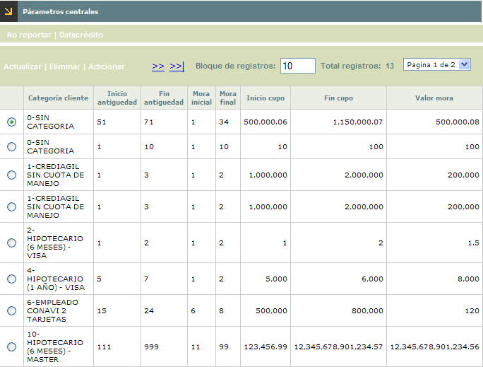
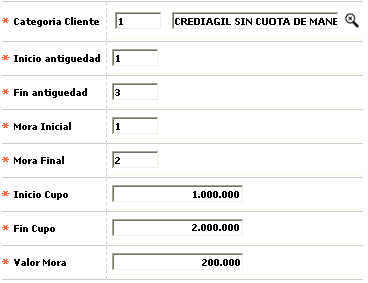
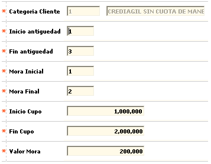
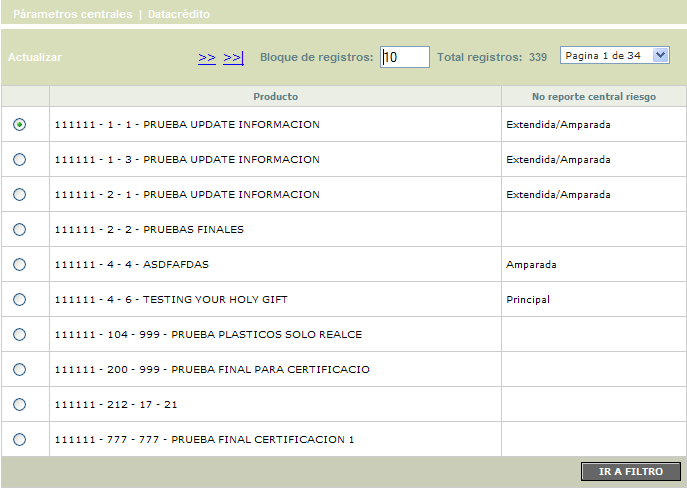
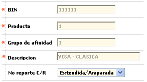
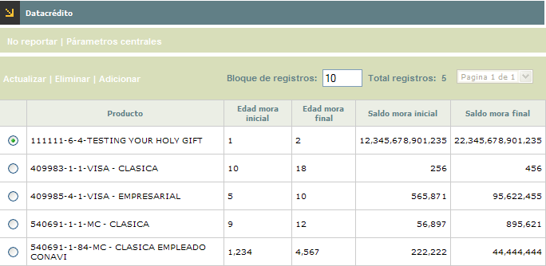
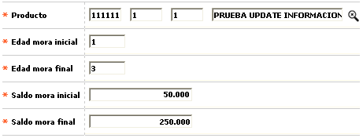
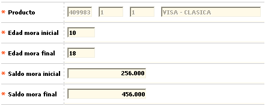

Parámetros centrales |
Mediante este formulario se habilita
el mantenimiento y consulta de la tabla que contiene la parametrización
requerida por el sistema, para el envío de la información respecto
de las obligaciones del cliente y su comportamiento crediticio a los entes
de control y centrales de riesgo, a través de la interface correspondiente.

El formulario contiene las opciones Actualizar, Eliminar y Adicionar. Cuenta también con los hipervínculos No reportar y Datacrédito
Adicionar: Si el usuario invoca la opción Adicionar se despliega un nuevo formulario.

Descripción de campos
Categoría cliente |
Campo
obligatorio con lista de valores de la cual se selecciona la Categoría
asociada a los clientes cuya información será enviada
a la central de riesgo. |
Inicio antiguedad |
En
este campo numérico de 3 posiciones, obligatorio, se registra
la cantidad de periodos (expresados en meses) deben transcurrir después
de la activación, para enviar la información del cliente
en la interface de centrales de riesgo. |
Fin antiguedad |
Campo
numérico de 3 posiciones, obligatorio, en el cual se registra
hasta cuántos períodos de activación (expresado
en meses) se toma el rango para enviar la información del cliente
en la interface de centrales de riesgo. |
Mora inicial |
En este campo numérico de 2 posiciones, obligatorio, se indica a partir de cuántos períodos de mora (expresados en meses) se debe enviar la información del cliente en la interface de centrales de riesgo. |
Mora final |
Campo numérico de 2 posiciones, obligatorio, en el que se registra hasta que altura de mora (expresada en meses) se debe enviar la información del cliente en la interface de centrales de riesgo. |
Inicio cupo |
Campo
numérico de 14 enteros y 2 decimales, obligatorio, en el cual
se indica el cupo total asignado al cliente a partir del cual se debe
enviar la información en la interface de centrales de riesgo. |
Fin cupo |
En
este campo numérico de 14 enteros y 2 decimales, obligatorio,
se registra el rango final del cupo total asignado al cliente que se
debe tener en cuenta para enviar la información en la interface
de centrales de riesgo. |
Valor mora |
Campo
obligatorio de 14 enteros y 2 decimales en el que se registra el monto
que debe tener el saldo en mora del cliente a partir del cual se envía
la información en la interface de centrales de riesgo. |
Actualizar: Si el usuario selecciona un registro e invoca la opción Actualizar se despliega un formulario en el cual el único campo NO modificable es la Categoría del cliente.


El formulario solo contiene la opción Actualizar.
Actualizar: si el usuario selecciona un registro e invoca la opción Actualizar se despliega un formulario en el cual el único campo modificable es No reporte C/R.

Descripción de campos
Bin / Producto / Grupo de afinidad |
Campos de salida en los que se muestra la combinatoria correspondiente al producto para el cual se está parametrizando la condición de no reporte a centrales de riesgo. |
Descripción |
En este campo de salida se despliega la descripción del producto anterior. |
No reporte C/R |
Campo
tipo combo en el cual se puede seleccionar entre Principal, Extendida,
Amparada, Extendida/Amparada o Todas el tipo de tarjetas que
no viajan en la interfase correspondiente. Así, cuando se selecciona
la opción Todas, lo que se le está indicando
al sistema es que no envía ninguna de las tarjetas pertenecientes
a ese producto. |

El formulario contiene las opciones Actualizar, Eliminar y Adicionar.
Adicionar: Si el usuario invoca la opción Adicionar se despliega un nuevo formulario.

Descripción de campos
Producto |
Campo
obligatorio con lista de valores de la que se debe selecciona el producto
para el cual se va a definir la manera como viaja la información
en la interfase. |
Edad mora incial |
En
este campo numérico de 5 dígitos, obligatorio, debe
indicarse la edad de mora inicial (expresada en número de periodos)
a partir de la cual se reporta a Datacrédito las obligaciones
identificadas con el producto y cuyo monto esté incluido dentro
del rango señalado. |
Edad mora final |
Campo
numérico de 5 dígitos, obligatorio, en el que debe indicarse
la edad de mora final (expresada en número de periodos) hasta
la cual se reporta a Datacrédito las obligaciones identificadas
con el producto y cuyo monto esté incluido dentro del rango
señalado. |
Saldo mora inicial |
Campo
numérico de 14 enteros y 2 decimales, obligatorio, en el que
se registra el monto que como mínimo deben tener las obligaciones,
del producto, por concepto de saldo en mora para ser reportadas a
Datacrédito. |
Saldo mora final |
En este campo numérico de 12 enteros y 2 decimales, obligatorio, se indica el monto máximo que pueden tener las obligaciones, del producto, por concepto de saldo en mora para ser reportadas a Datacrédito. |
Actualizar: si el usuario selecciona un registro e invoca la opción Actualizar se despliega un formulario en el cual el único campo NO modificable es el Producto.

s="PARRAFO">